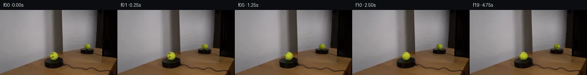

![首帧]()

Round 00
2026-11-05T12:31:02.355701+00:00像素候选变化代码 +174/−0inspection 更新
pixels 84cd05f330ac0d9b · code 6aca99cb70e36c55
查看本轮 generate.py 真实 diff
--- previous/generate.py
+++ current/generate.py
@@ -0,0 +1,174 @@
+"""Rotate photographed tennis-ball material in place using local pixel operations."""
+from pathlib import Path
+import json
+import numpy as np
+from PIL import Image, ImageDraw
+from scipy.ndimage import map_coordinates, gaussian_filter
+from artifact_io import save
+
+ROOT = Path(__file__).resolve().parent
+SOURCE = np.array(Image.open(ROOT / 'first_frame.png').convert('RGB'))
+ELEVATION = np.deg2rad(16.0)
+S, C = np.sin(ELEVATION), np.cos(ELEVATION)
+SUPER = 6
+
+
+def smoothstep(a, b, x):
+ t = np.clip((x-a)/(b-a), 0, 1)
+ return t*t*(3-2*t)
+
+
+def normal_features(x, y, z):
+ return np.stack([np.ones_like(x), x, y, z, y*z], axis=-1)
+
+
+class View:
+ def __init__(self, cx, cy, rx, ry, facing):
+ self.cx, self.cy, self.rx, self.ry = cx, cy, rx, ry
+ self.facing = facing
+ self.bounds = (int(np.floor(cx-rx-1)), int(np.floor(cy-ry-1)),
+ int(np.ceil(cx+rx+1)), int(np.ceil(cy+ry+1)))
+ x0, y0, x1, y1 = self.bounds
+ yy, xx = np.mgrid[y0:y1, x0:x1]
+ x = (xx-cx)/rx
+ y = (cy-yy)/ry
+ z = np.sqrt(np.maximum(0, 1-x*x-y*y))
+ features = normal_features(x, y, z)
+ colors = SOURCE[y0:y1, x0:x1].astype(float)
+ # Exclude the ink, pale seam, and antialiased silhouette when estimating light.
+ mask = ((x*x+y*y < .83) & (colors[...,1] > 65)
+ & (colors[...,2] < .28*colors[...,1])
+ & (colors[...,0] > .75*colors[...,1]))
+ design, target = features[mask], colors[mask]
+ weights = np.ones(len(target))
+ for _ in range(6):
+ coeff = np.linalg.lstsq(design*weights[:,None], target*weights[:,None], rcond=None)[0]
+ error = np.linalg.norm(design@coeff-target, axis=1)
+ weights = np.minimum(1, 15/np.maximum(error, 1))
+ self.coeff = coeff
+ # Source-pixel material after removing the smoothly varying photographed lighting.
+ self.albedo = colors / np.maximum(self.light(x, y, z), [35, 35, 7])
+ self.albedo = np.clip(self.albedo, 0.06, 2.4)
+ self.material_support = (x*x+y*y < .94**2).astype(float)
+ # Infer the plain color away from silhouette contamination.
+ clean = mask & (np.linalg.norm(self.albedo-1, axis=-1) < .5)
+ self.plain = np.median(self.albedo[clean], axis=0)
+
+ # Camera normals, sampled finely for smooth movement of tiny ink details.
+ yy, xx = np.mgrid[0:(y1-y0)*SUPER, 0:(x1-x0)*SUPER]
+ self.px = x0+(xx+.5)/SUPER-.5
+ self.py = y0+(yy+.5)/SUPER-.5
+ nx = (self.px-cx)/rx
+ up = (cy-self.py)/ry
+ radius2 = nx*nx+up*up
+ depth = np.sqrt(np.maximum(0, 1-radius2))
+ self.cover = (radius2 <= 1).astype(float)
+ self.nx = nx
+ self.ny = C*up+S*depth
+ self.nz = facing*(-S*up+C*depth)
+ self.illumination = self.light(nx, up, depth)
+ self.shape = (y1-y0, x1-x0)
+
+ def light(self, x, y, z):
+ return np.clip(normal_features(x, y, z)@self.coeff, [30, 32, 6], [220, 230, 80])
+
+ def texture(self, nx, ny, nz):
+ # Project a material normal back into its photographed reference hemisphere.
+ local_up = C*ny-self.facing*S*nz
+ depth = S*ny+self.facing*C*nz
+ sx = self.cx+self.rx*nx
+ sy = self.cy-self.ry*local_up
+ x0, y0, _, _ = self.bounds
+ coords = [sy-y0, sx-x0]
+ albedo = np.stack([map_coordinates(self.albedo[...,ch], coords, order=1,
+ mode='nearest', prefilter=False) for ch in range(3)], axis=-1)
+ support = map_coordinates(self.material_support, coords, order=1,
+ mode='constant', cval=0, prefilter=False)
+ # At grazing incidence, photographic edge pixels contain background;
… diff truncated; 87 more lines …